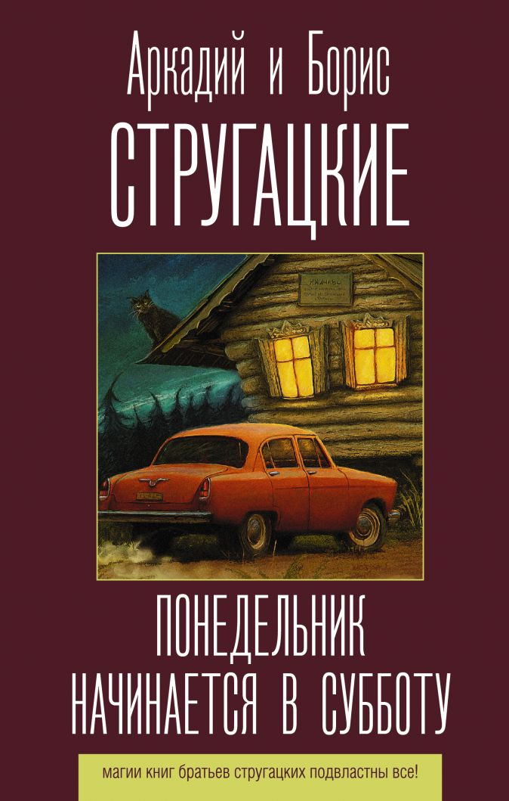
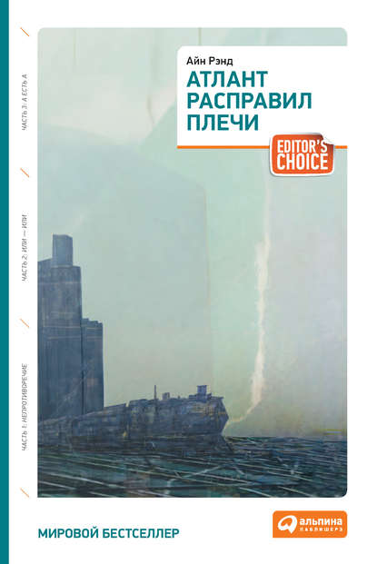
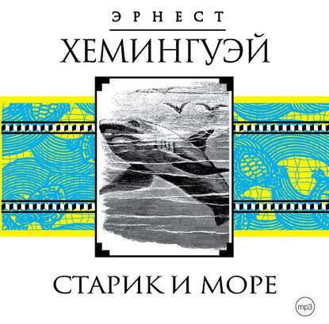

Корзина

Понедельник начинается в субботу
Программист Александр Привалов отправляется в путешествие по России.
В пути, неподалеку от Соловца, он встречает двух сотрудников местного вуза со
странным названием НИИЧАВО.
А затем соглашается переночевать в институтском музее
Изнакурнож на улице Лукоморье и практически попадает в сказочную реальность…
60 грн

Атлант расправил плечи
В США наступило время социализма. «Политика равных возможностей»
– вот кредо тех, кто пришел к власти.
Вот только социалисты не предвидели, что их реформы приведут к краху
экономики и развалят институт американского бизнеса… Повсюду начинают
исчезать знаменитости и богатейшие олигархи страны.
60 грн

Старик и море
"Читайте то, что я пишу, и не ищите ничего, кроме собственного удовольствия.
А если вы еще что-нибудь найдете, это уж будет ваш вклад в прочитанное.
Не было еще хорошей книги, которая возникла бы из заранее выдуманного символа,
запеченного в книгу, как изюм в сладкую булку… Я попытался дать настоящего старика
и настоящего мальчика, настоящее море и настоящую рыбу, и настоящих акул.
И, если мне это удалось сделать достаточно хорошо и правдиво, они, конечно,
могут быть истолкованы по-разному"
60 грн